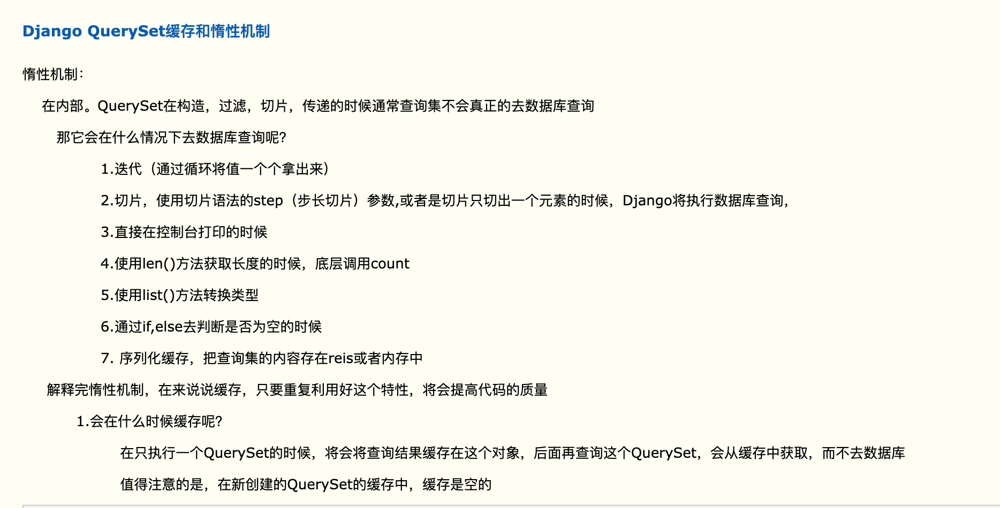

queryset惰性机制（缓存机制）

select_related
model.tb.objects.all().select_related('外键字段')
model.tb.objects.all().select_related('外键字段__外键字段')
概念
对于一对一字段（OneToOneField）和外键字段（ForeignKey，多对一），可以使用select_related 来对QuerySet进行优化
select_related函数帮我们做了：在一次的查询中查询到对象集合以及和关联的对象的集合。可以直接获取相应的外键的对象列表。
在效率上比之前的分步查询上，效率高，
前提：查询的表和关联的表的层级不深和不多。情况下：效率高；
如果查询的表的层级比较多，关联的表较多（外键较多），会耗时。
在对QuerySet使用select_related()函数后，Django会获取相应外键对应的对象，从而在之后需要的时候不必再查询数据库了